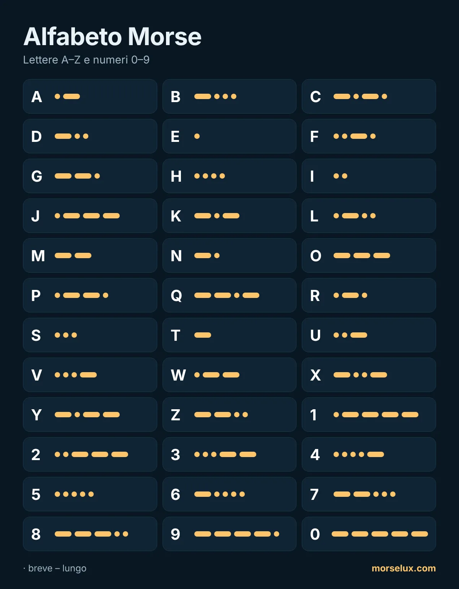

- Ascolta, non contare. A velocità reale non si riescono a contare punti e linee; ogni lettera è una sequenza sonora.
- Gli opposti aiutano: A (·–) e N (–·), D (–··) e U (··–), G (––·) e W (·––) sono speculari.
- Esercitati in sessioni brevi. Dieci-quindici minuti al giorno rendono più di una sessione lunga alla settimana.
- Usalo. Scrivi una parola nel traduttore codice Morse e prova a sentire le lettere prima di leggerle.
MorseLux › Alfabeto
·–·· ··– –··– Tabella · tocca per ascoltare
Alfabeto Morse
Tutte le lettere, i numeri e i segni di punteggiatura del codice Morse internazionale. Tocca un segno per sentire come suona – è così che si impara davvero il Morse.
Lettere A–Z
I numeri in codice Morse (0–9)
I numeri hanno sempre cinque segnali, e questo li rende facili da imparare: da 1 a 5 cominciano con i punti, da 6 a 0 con le linee.

Segni di punteggiatura
| Segno | Morse | Ascolta |
|---|---|---|
| . | ·–·–·– | |
| , | ––··–– | |
| ? | ··––·· | |
| ' | ·––––· | |
| ! | –·–·–– | |
| / | –··–· | |
| ( | –·––· | |
| ) | –·––·– | |
| & | ·–··· | |
| : | –––··· | |
| ; | –·–·–· | |
| = | –···– | |
| + | ·–·–· | |
| - | –····– | |
| _ | ··––·– | |
| " | ·–··–· | |
| $ | ···–··– | |
| @ | ·––·–· |
Lettere speciali (À, È, É, Ñ…)
Queste lettere fanno parte del codice Morse esteso usato in alcune lingue. À, È ed É hanno un segno proprio; le altre lettere accentate dell'italiano (Ì, Ò, Ù) si inviano di solito come lettera semplice, senza accento.
| Segno | Morse | Ascolta |
|---|---|---|
| Ä | ·–·– | |
| Ö | –––· | |
| Ü | ··–– | |
| ß | ···––·· | |
| Ñ | ––·–– | |
| É | ··–·· | |
| À | ·––·– | |
| È | ·–··– | |
| Ç | –·–·· | |
| Ğ | ––·–· | |
| Ş | ·––·· |
Consigli per imparare l'alfabeto
Domande frequenti
Quanti segni ha l'alfabeto Morse?
Il codice Morse internazionale ha segni per le 26 lettere A–Z, le dieci cifre 0–9 e i segni di punteggiatura più comuni. Alcune lingue aggiungono lettere proprie, come É o Ñ.
Come si scrivono le lettere accentate in Morse?
À (·––·–), È (·–··–) ed É (··–··) hanno un segno proprio. Nella pratica, però, le lettere accentate si inviano spesso senza accento: A, E, I, O, U.
Posso stampare l'alfabeto Morse?
Sì. Usa il pulsante «Scarica PDF» in cima alla pagina: è un foglio A4 chiaro, comodo per la classe o il gruppo scout.
Qual è la lettera più corta e quale la più lunga?
Le più corte sono E (·) e T (–). Tra le lettere, le più lunghe hanno quattro segnali, come Q (––·–) e Y (–·––); i numeri ne hanno sempre cinque.